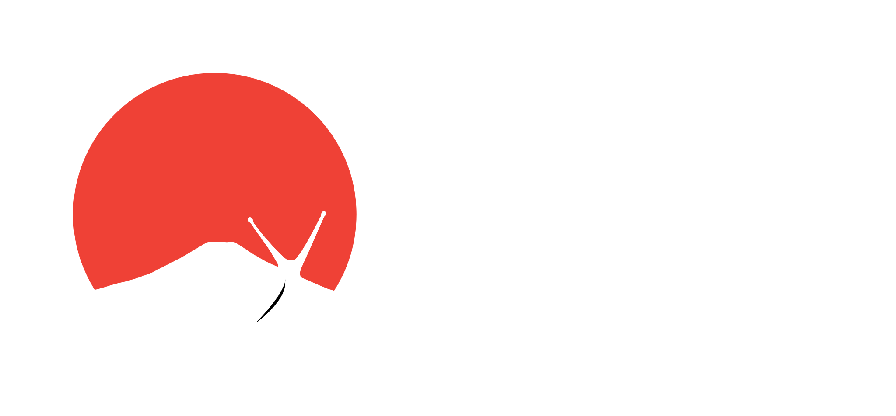
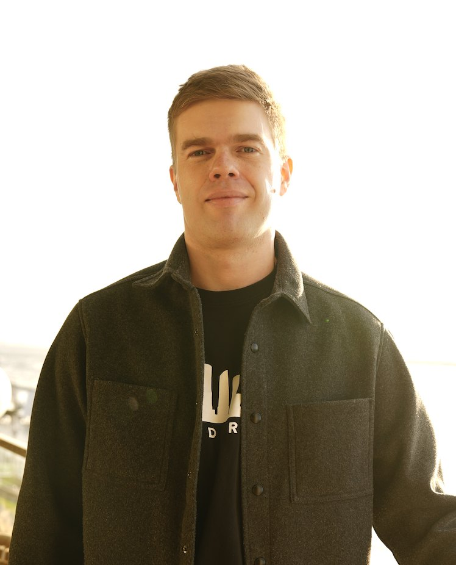

Медитация для начинающих
Как начать заниматься самому.

Медитация для начинающих.
Осознанный образ жизни.
Гармония с окружающим миром.
Study Oneself — медитация для начинающих и осознанный образ жизни.
Реальные практические советы по изменению себя.
Сон, спокойствие, привычки. Гармония с окружающим миром.

Я веду Study Oneself и пробую то, о чём рассказываю. Объясняю так, как сказал бы другу: что делать, где обычно сбиваются, и что я сам заметил.
Как начать заниматься самому.
Сон, спокойствие, привычки.
Реальные практические советы. Гармония с окружающим миром.
О улитка!
Взбирайся на Фудзи —
но медленно, медленно.
Напиши, если хочешь делать это с нами. Для работы даём доступ к сильным ИИ-агентам и учим ими пользоваться.
Ведёшь русские профили Study Oneself: выпускаешь ролики, отвечаешь людям, держишь шапку и описания в одном тоне. Пишешь просто, без эзотерики и без давления. Опыт медитации не обязателен. Нужны аккуратность и привычка доводить запись до публикации.
Придумываешь и собираешь сами ролики, обложки и короткие тексты. Это не SMM: SMM выпускает и говорит с людьми, креатор делает материал. Можно откликнуться на одну роль или на обе.
Dart и Flutter.